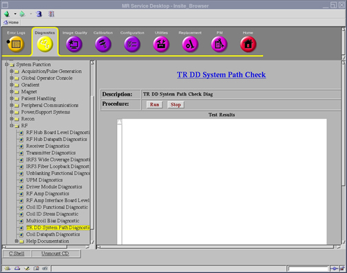

Proprietary to General Electric
Direction 5500113, Rev# 3
Discovery MR450 1.5T Service Methods
Module Version 2.0, Version Date 8/19/08
Proprietary to General Electric |
Diagnostics >> System Function >> RF >> TR DD System Path Diagnostic
Illustration 1: TR DD System Path Check

The purpose of this diagnostic is to help the field engineer in troubleshooting faults related to the T/R (Transmit Receive) and DD (Dynamic Disable & Direct Drive) System Paths.
T/R and DD system paths
Ensure no scan is running before running the diagnostic.
To test all failure modes, each type of transmit coil or switch that could be used in the system must be tested. This includes Connector A local transmit proton coils, Connector P1 local transmit proton coils, and Connector A MNS transmit switches.
Only one coil or transmit switch can be connected at a time. This means that the diagnostic must be executed multiple times on differing coil/switch populations to fully cover all failure scenarios.
Insert service key.
Disconnect all local transmit coils and MNS T/R switches from Connectors A and P1.
Click [Run] to start the diagnostic.
| NOTE: | Click [Stop] to halt the diagnostic. |
None
The results are displayed in the test results window. The results are also logged under /usr/g/service/log/System_Path_Diag_Log.txt.
If the diagnostic completes without errors, no further action is required.
If a failure occurs, review the diagnostic error message in the results window, as well as the system error log and extended error messages for subsequent actions. The error message will state the problem and what signal path is experiencing it.
If a Connector A local transmit proton coil will be used with the system, connect it to Connector A. Click [Run] to begin diagnostic again.
If a Connector P1 local transmit proton coil will be used with the system, connect it to Connector P1. Click [Run] to begin diagnostic again.
If the system is MNS enabled and a MNS T/R switch will be used with the system, connect it to Connector A. Click [Run] to begin diagnostic again.
This diagnostic has the ability to detect the following faults:
Table 1: Fault Detections
| T/R Faults | DD Faults |
| Head: Open & Short | Open |
| Body: Open & Short | Short |
| MNS: Open & Short (optional) | High Voltage |
| Head and Body Cables Swapped | |
| MNS and Body Cables Swapped (optional) | |
| MNS and Head Cables Swapped (optional) | |
| Connector A and Connector P1 T/R Cables Swapped |